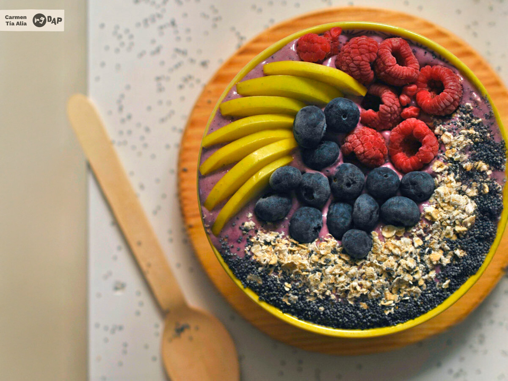

<!DOCTYPE html>
<html lang="es-ES"></html>
<head>
  <meta charset="UTF-8">
  <!-- Meta-tag para hacer la página responsive -->
  <meta name="viewport" content="width=device-width, initial-scale=1.0">
  <title>Receta de Açai Bowl</title>
  <style>
    /* Establece los estilos básicos para todo el cuerpo de la página */
    body {
      font-family: 'Arial', 'Helvetica Neue', sans-serif; /* Tipo de letra */
      line-height: 1.6; /* Espaciado entre líneas */
      margin: 20px; /* Margen alrededor de todo el documento */
      background-color: #f9f9f9; /* Fondo claro para buena lectura */
      color: #222; /* Color de texto principal */
    }

    /* Estilos específicos para los encabezados (h1 y h2) */
    h1, h2 {
      color: black; /* Color oscuro para hacerlos destacados */
    }

    /* Estilos aplicados a las imágenes */
    img {
      width: 300px; /* Ancho fijo inicial de la imagen */
      height: 225px; /* Altura fija inicial de la imagen */
      display: block; /* Hace que las imágenes se comporten como bloques */
      margin: 0 auto 10px; /* Centraliza las imágenes y proporciona margen inferior */
    }

    /* Estilos para las líneas horizontales */
    hr {
      border: 0; /* Elimina el borde predeterminado */
      height: 1px; /* Ajusta el grosor de la línea */
      background-color: #800020; /* Color personalizado de la línea */
      margin: 20px 0; /* Espacio superior e inferior alrededor de la línea */
    }

    /* Clase principal de contenedor que contiene todo el contenido */
    .container {
      max-width: 800px; /* Ancho máximo del contenedor (diseño centrado) */
      margin: auto; /* Asegura que el contenedor esté centrado horizontalmente */
      padding: 20px; /* Relleno interno para que el contenido no toque los bordes */
      background-color: #fff; /* Fondo blanco para contrastar con el fondo general */
      box-shadow: 0 0 10px rgba(0, 0, 0, 0.1); /* Sombra suave para darle un diseño moderno */
      border-radius: 8px; /* Bordes redondeados */
    }

    /* Estilo para listas desordenadas (ul) y ordenadas (ol) */
    ul, ol {
      margin: 0 0 20px 20px; /* Ajusta el margen y el espacio entre líneas */
      padding: 0; /* Elimina el espaciado interno predeterminado */
    }

    /* Estilos para el pie de página */
    footer {
      text-align: center; /* Centra el texto dentro del pie de página */
      margin-top: 20px; /* Espacio adicional con el contenido anterior */
      font-size: 0.9em; /* Tamaño de texto más pequeño */
      color: #777; /* Color gris suave */
    }
  </style>
</head>
<body>
<div class="container">
  <!-- Título principal de la receta -->
  <h1>Cómo hacer açaí bowl, el desayuno o merienda más saludable</h1>

  <!-- Imagen principal de la receta -->
   <!-- Imagen con bordes redondeados -->
<p>El <strong>açaí bowl o cuenco de açaí o acai</strong> es una de las mejores maneras de comenzar el día. <strong>El mejor desayuno y el más saludable</strong> para cuando necesitamos un chute energético potente con el que aguantar la mañana sin desfallecer. Su preparación es sencilla, recordando a un <a class="text-outboundlink" href="https://www.directoalpaladar.com/ingredientes-y-alimentos/como-hacer-el-smoothie-bowl-perfecto-sin-receta" data-vars-post-title="Cómo hacer el smoothie bowl perfecto sin receta" data-vars-post-url="https://www.directoalpaladar.com/ingredientes-y-alimentos/como-hacer-el-smoothie-bowl-perfecto-sin-receta">smoothie bowl</a> solo hay que triturar leche, açaí en polvo y fruta congelada y adornarla con cereales, semillas, frutos secos o lo que más nos apetezca.</p>
<p>El <a class="text-outboundlink" href="https://www.directoalpaladar.com/ingredientes-y-alimentos/el-acai-o-acai-propiedades-y-usos-en-la-cocina-de-este-superalimento" data-vars-post-title="El Açaí o Acai. Propiedades y usos en la cocina de este superalimento" data-vars-post-url="https://www.directoalpaladar.com/ingredientes-y-alimentos/el-acai-o-acai-propiedades-y-usos-en-la-cocina-de-este-superalimento">açaí</a> está considerado como un superalimento, es antioxidante, rico en calcio, proteínas, fibra y mucho más. Ayuda a mantener fuerte el sistema inmunológico y a prevenir enfermedades cardiovasculares. Una joya, vamos. Estas bayas, que se parecen mucho a los arándanos, se cultivan en Brasil y hasta España llegan deshidratadas y pulverizadas. Con ellas en este formato hemos preparado nuestro <strong>açaí bowl</strong>. Lo podéis ver en vídeo y suscribiros a nuestro canal de YouTube para no perderos nada o seguir el paso a paso tradicional que encontraréis a continuación.</p>
<div class="asset-recipe-meta">
    <h2 class="asset-recipe-section-title"> Ingredientes </h2>
    <hr>
    <div class="asset-recipe-yield">
     Para 2 personas</div>
    <ul class="asset-recipe-list">
                  <li class="asset-recipe-list-item m-is-ingr">
        <span class="asset-recipe-ingr-name"><span>Plátano (congelado)</span></span>
        <span class="asset-recipe-ingr-amount">2 <abbr title=""></abbr></span>
       </li>
                        <li class="asset-recipe-list-item m-is-ingr">
        <span class="asset-recipe-ingr-name"><span>Arándanos (congelados)</span></span>
        <span class="asset-recipe-ingr-amount">40 <abbr title=""></abbr></span>
       </li>
                        <li class="asset-recipe-list-item m-is-ingr">
        <span class="asset-recipe-ingr-name"><span>Frambuesas (congeladas)</span></span>
        <span class="asset-recipe-ingr-amount">25 <abbr title=""></abbr></span>
       </li>
                        <li class="asset-recipe-list-item m-is-ingr">
        <span class="asset-recipe-ingr-name"><span>Almendras </span></span>
        <span class="asset-recipe-ingr-amount">6 <abbr title=""></abbr></span>
       </li>
                        <li class="asset-recipe-list-item m-is-ingr">
        <span class="asset-recipe-ingr-name"><span>Leche </span></span>
        <span class="asset-recipe-ingr-amount">150 <abbr title="mililitros">ml</abbr></span>
       </li>
                        <li class="asset-recipe-list-item m-is-ingr">
        <span class="asset-recipe-ingr-name"><span>Açai molido </span></span>
        <span class="asset-recipe-ingr-amount">5 <abbr title="gramos">g</abbr></span>
       </li>
                        <li class="asset-recipe-list-item m-is-ingr m-no-amount">
        <span class="asset-recipe-ingr-name"><span>Semillas de amapola </span></span>
       </li>
                        <li class="asset-recipe-list-item m-is-ingr m-no-amount">
        <span class="asset-recipe-ingr-name"><span>Copos de avena </span></span>
       </li>
                        <li class="asset-recipe-list-item m-is-ingr m-no-amount">
        <span class="asset-recipe-ingr-name"><span>Manzanas </span></span>
       </li>
               </ul>
    <h2 class="asset-recipe-section-title">Cómo hacer açai bowl</h2>
    <hr>
    <div class="asset-recipe-difficulty">Dificultad: Fácil</div>
    <ul class="asset-recipe-list">
     <li class="asset-recipe-list-item m-is-totaltime">
      <span class="asset-recipe-time-name"><span>Tiempo total</span></span>
      <span class="asset-recipe-time-value">10 <abbr title="minutos">m</abbr></span>
     </li>
           <li class="asset-recipe-list-item m-is-preptime">
       <span class="asset-recipe-time-name"><span>Elaboración</span></span>
       <span class="asset-recipe-time-value">10 <abbr title="minutos">m</abbr></span>
      </li>
                   </ul>
   </div>

<div class="asset-recipe-steps"><p>Es necesario que para elaborar el açai bowl <strong>tengamos la fruta congelada</strong> para que la consistencia sea cremosa. Para ello, antes de la preparación, pelamos y cortamos los plátanos en rodajas y los congelamos. Contamos también con que los arándanos y las frambuesas están congeladas.</p>
<!-- BREAK 3 --> <div class="ad ad-out">
 <div style="display:none;" class="Content_3"></div>
</div>
<p>Colocamos la fruta congelada en el vaso de una batidora potente junto con las almendras. Regamos con la mitad de la leche y el açai molido (cinco gramos es el correspondiente a una cucharada sopera rasa). Trituramos hasta homogeneizar y <strong>probamos el espesor</strong>. Añadimos el resto de la leche, poco a poco y triturando de nuevo hasta alcanzar la consistencia deseada.</p>
<!-- BREAK 4 -->
<p>Es muy <strong>importante tener una batidora potente</strong> pues los trozos de fruta congelada ofrecen mucha resistencia. Cualquier batidora de vaso americana es buena para ello. También podéis hacer el açai bowl con Thermomix, que es el robot del que yo dispongo en casa. He ido aumentando la velocidad de cinco a siete progresivamente durante, aproximadamente, 30 segundos.</p>
<!-- BREAK 5 --><div class="article-asset-image article-asset-normal article-asset-center">
 <div class="asset-content">
                   
   <noscript></noscript>
   
      </div>
</div>
</div>
<p>Servimos el açai bowl en un bol y lo decoramos con las semillas de amapola, los copos de avena, las manzanas cortadas en trozos pequeños y unas rodajas de plátano. También podemos añadir más frutos rojos si nos gustan.</p>
  <footer>
    &copy; 2025 Recetas de Cocina. Todos los derechos reservados.
  </footer>
</div>
</body>
</html>

            